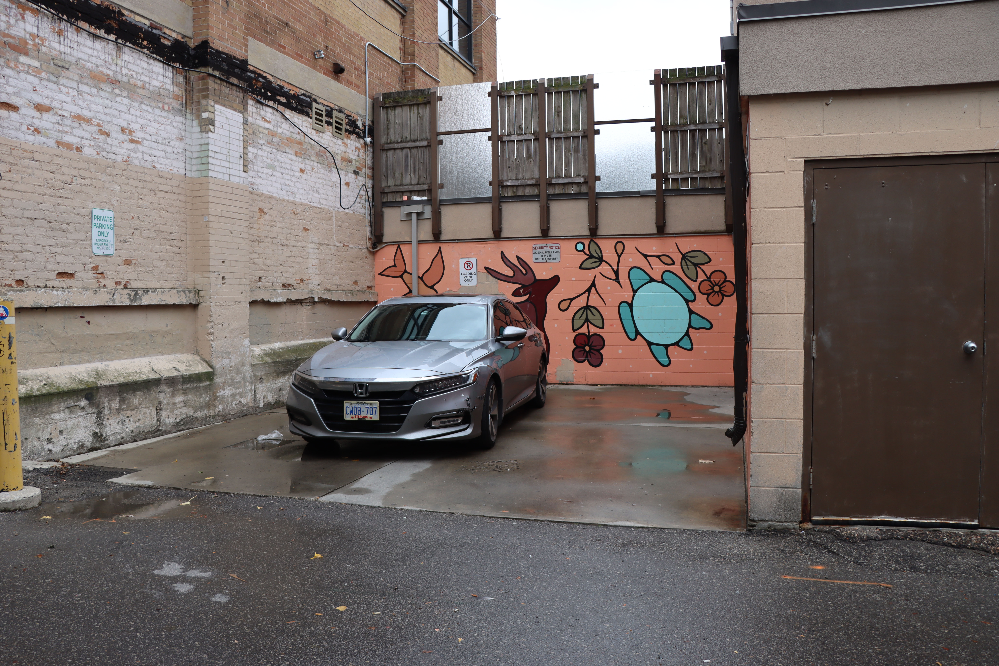

TITLE: KINSHIP YEAR: 2020 MEDIUM: Mixed media
About the artist: Also known as Morningstar, Alanah Jewell is a French-First Nations artist. Her work promotes Indigenous art and culture in urban areas. In her works, Morningstar gives hope to a younger generation trying to find their identity through art. She uses a lot of imagery and symbolisms found in her culture to illustrate in her paintings.
